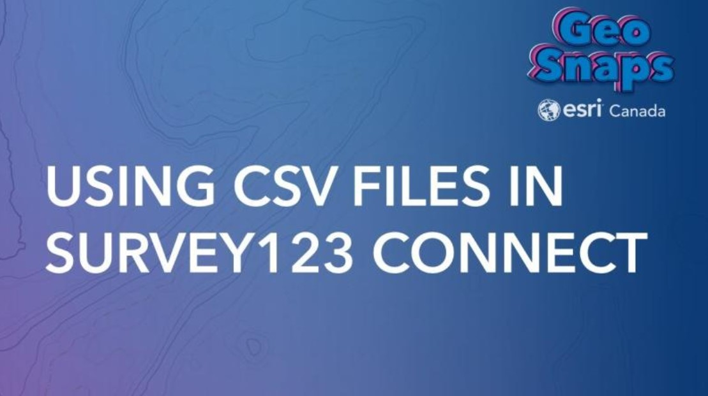

https://www.youtube.com/watch?v=scPyLwa2QT0)">
Link)">
https://www.youtube.com/watch?v=qv3VZzaPKKw)">
https://www.youtube.com/watch?v=ShVxMT9tSjQ)">
https://www.youtube.com/watch?v=-SESGRIoxdI)">
https://resources.esri.ca/webinars/getting-started-with-indoor-gis)">
https://www.youtube.com/watch?v=gMjfSx07uYE)">
https://www.youtube.com/watch?v=QE2rdzMy83g)">
https://www.youtube.com/watch?v=bIAYdhOJbXk)">
https://www.youtube.com/watch?v=5yCWdy1qGwY)">